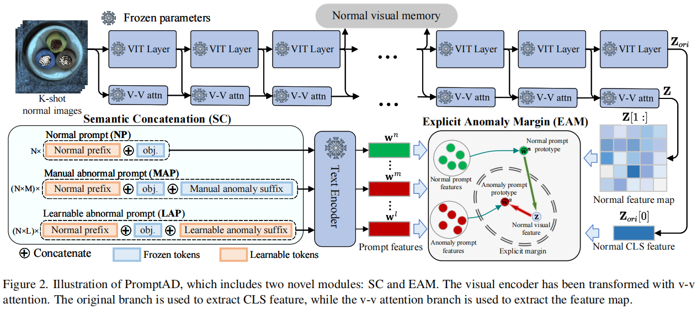

IAD
2024-CV-Surveys
Industrial Anomaly Detection(工业缺陷检测)
- A Systematic Review of Available Datasets in Additive Manufacturing [2024-01-30]
- A Comprehensive Survey on Machine Learning Driven Material Defect Detection: Challenges, Solutions, and Future Prospects [2024-06-13]
- A PRISMA Driven Systematic Review of Publicly Available Datasets for Benchmark and Model Developments for Industrial Defect Detection [2024-06-13]
- VAD
- 点云的工业系统 3D 缺陷检测和分类
2023-CV-Surveys
Anomaly Detection
- Deep Industrial Image Anomaly Detection: A Survey [2023-01-30] ⭐code
2022-CV-Surveys
工业异常检测
PromptAD: Learning Prompts with only Normal Samples for Few-Shot Anomaly Detection
华东师范大学，上海，中国 华东师范大学 重庆学院，重庆，中国 海军军医大学，上海，中国 厦门大学，中国福建
摘要
视觉语言模型对few-shot工业异常检测有了很大的改进，通常需要通过快速工程设计数百个提示。对于自动化场景，我们首先使用传统的多类范式的提示学习作为自动学习提示，但发现它在单类异常检测中不能很好地工作。为了解决上述问题，本文提出了一种少镜头异常检测的一类提示学习方法PromptAD。首先，我们提出了语义连接方法，通过将正常提示与异常后缀连接，将正常提示转置为异常提示，从而构建了大量的负样本，用于指导单类设置中的提示学习。此外，为了缓解缺乏异常图像所带来的训练挑战，我们引入了显式异常边缘的概念，通过超参数显式地控制正常提示特征和异常提示特征之间的边缘。对于图像级/像素级异常检测，PromptAD在MVTec和VisA上的11/12 few-shot设置中获得第一名。
引言
在这个框架中，在训练期间只有正常的样本可用，但在测试阶段，该模型被期望识别异常的样本。由于工业异常检测通常为各种工业生产线定制一个模型，因此以很少的样本快速训练模型的能力在实际应用中具有重要的前景。
由于基础模型[27,36,38]具有较强的 zero-shot能力，WinCLIP [21]被提出作为第一个利用视觉语言基础模型（即CLIP [37]）来提高模型在少镜头设置下的异常检测性能的工作。为了更好地利用提示指导，WinCLIP引入了一种名为“提示集成”的提示工程师策略，该策略结合了足够数量的手动设计的提示。例如，一些手动提示（例如，裁剪后的照片、模糊的照片等）被作为正常的提示组合在一起。如图1（右）所示，随着提示数量的增加，WinCLIP的表现有所改善，在大约1000个提示时达到饱和点。其他方法如SAA+ [7]和AnoVL [13]也采用即时工程来提高模型性能，这已经成为快速引导异常检测的仪式。及时工程涉及人工干预，需要仔细设计，不满足工业场景的自动化要求。
图1.左：多类和单类设置下的提示学习。右图：WinCLIP使用不同的提示数量的提示引导结果，以及基线和我们的PromptAD的提示引导结果，以便一次性提示学习。所有的结果都在MVTec上。
在本文中，我们提出了一种只有正常样本的一类提示学习方法，称为PromptAD。为了解决上述的第一个挑战，我们提出了语义连接（SC）。直观地说，将一个提示符与反义文本连接起来可以改变它的语义。根据这个想法，如图1（左b.）所示，SC首先设计一个可学习的正常提示，如\([\mathbf{P}_{1}][\mathbf{P}_{2}]\ldots[\mathbf{P}_{E_{N}}][obj.]\)。对于正常样本，然后手动连接与异常相关的各种文本与正常提示，如\([\mathbf{P}_1][\mathbf{P}_2]\ldots[\mathbf{P}_{E_N}][obj.][with][flaw]\)。它被转换为异常提示，在提示学习过程中可以作为正常样本的负提示。为了扩大异常信息的丰富性，SC还设计了一个可学习的异常提示，通过将一个可学习标记的后缀与一个正常提示连接起来，例如\([\mathbf{P}_{1}][\mathbf{P}_{2}]\ldots[\mathbf{P}_{E_{N}}][obj.][\mathbf{A}_{1}][\mathbf{A}_{2}]\ldots[\mathbf{A}_{E_{A}}]\)，其中\(\begin{bmatrix}\mathbf{A}_i\end{bmatrix}\)是可学习的token。对可学习异常提示和手动异常提示的分布进行对齐，以确保可学习异常提示学习到更多正确的异常信息。
此外，在异常检测中，异常样本不可用，因此无法通过对比损失来明确控制正常和异常提示特征之间的边缘。为了解决第二个挑战，我们提出了显式异常边缘（EAM）的概念，其中引入了一个超参数，以确保正常特征与正常提示特征之间的距离小于正常特征与异常提示特征之间的距离。从而确保在正常提示和异常提示之间有足够的间隔。图1（右）说明了我们的巨大优势，可以看出，（与WinCLIP [21]和Baseline[59]相比）PromptAD仅通过10个∼20（↓∼980和↓0）提示就能达到91.3%（↑1.2%和↑9.8%）/92.5%（↑7.7%和↑的3.7%）图像级/像素级异常检测结果。
综上所述，本文的主要贡献是：
- 我们探讨了提示学习在单类异常检测中的可行性，并提出了一种one-class提示学习方法称为PromptAD，它彻底击败了传统的多类提示学习。
- 提出了语义连接（SC），它可以通过连接异常后缀来转换正常提示的语义，从而为正常样本构造足够的负提示。
- 提出了显式异常边缘（EAM），它可以通过一个超参数显式地控制正常提示特征与异常提示特征之间的距离。
- 对于图像级/像素级异常检测，PromptAD在MVTec [4]和VisA [61]的11/12 few-shot设置中获得第一名。
前期准备工作
CLIP和提示学习
对比语言图像预训练称为CLIP [37]，是一种大规模的视觉语言模型，以其zero-shot分类能力而闻名。具体来说，给出一个未知的图像i，和K个文本提示\(\{\mathbf{s}_{1},\mathbf{s}_{2},...,\mathbf{s}_{K}\}\)，CLIP可以预测i属于以下K个文本提示的分布： \[ p(\mathbf{y}|\mathbf{i})=\frac{\exp<f(\mathbf{i}),g(\mathbf{s}_y)/\tau>}{\sum_{i=1}^K\exp<f(\mathbf{i}),g(\mathbf{s}_i)/\tau>} \] 其中，f（·）和g（·）分别是视觉编码器和文本编码器。<·，·>表示余弦相似度，τ为温度超参数。用于CLIP零镜头分类的初始文本提示仍然很简单，例如[class]的照片等，比直接使用类的名称作为提示略好一些。
提示学习受自然语言处理（NLP）[24,46]中提示学习成功的启发，CoOp [59]将这种模式引入到 few-shot分类中，旨在自动学习CLIP的高效提示。具体来说，在CoOp中使用的提示符不是冻结的文本描述，而是一组可训练的参数： \[ \mathbf{s}_k=[\mathbf{P}_1][\mathbf{P}_2]\ldots[\mathbf{P}_{E_P}][class_k] \] 其中\([\mathbf{P}_1][\mathbf{P}_2]\ldots[\mathbf{P}_{E_P}]\)是可训练的标记，\([class_k]\)是不可训练的第k类名。提示学习的目的是自动训练有效的提示，以提高下游分类任务的剪辑性能。
CLIP Surgery
作为一种分类模型，CLIP在没有微调的提示引导图像定位任务中的适应性要差得多。为了找出为什么CLIP不能完成图像定位任务，一些CLIP可解释的工作[31,57]分析了CLIP提取视觉特征的机制。这些研究观察到，Q-K自注意[48]的全局特征提取影响了CLIP的定位能力，具体如下： \[ Attn(\mathbf{Q},\mathbf{K},\mathbf{V})=softmax(\mathbf{Q}\cdot\mathbf{K}^\mathrm{T}\cdot scale)\cdot\mathbf{V} \] 为此，CLIP-Surgery[31]提出了一种V-V注意机制，在不破坏原始结构的情况下增强模型对局部特征的注意。如图2所示，特征提取过程描述如下： \[ \begin{gathered} \mathbf{Z}_{ori}^{l-1}=[\mathbf{t}_{cls};\mathbf{t}_{1};\mathbf{t}_{2},...;\mathbf{t}_{T}], \\ \mathbf{Z}^{l-1}=[\mathbf{t}_{cls}^{\prime};\mathbf{t}_{1}^{\prime};\mathbf{t}_{2}^{\prime},...;\mathbf{t}_{T}^{\prime}], \\ [\mathbf{Q}^{l},\mathbf{K}^{l},\mathbf{V}^{l}]=QKV_Proj.^{l}(\mathbf{Z}_{ori}^{l-1}), \\ \mathbf{Z}^{l}=Proj.^{l}(Attn(\mathbf{V}^{l},\mathbf{V}^{l},\mathbf{V}^{l}))+\mathbf{Z}^{l-1}, \end{gathered} \] 其中\(\mathbf{Z}_{ori}^{l-1}\)表示（l−1）层输出的原始剪辑视觉编码器和\(\mathbf{Z}^{l-1}\)表示本地感知输出层l−1，QKV P roj.l和P rojl表示QKV投影和输出投影，其参数由原始CLIP的视觉编码器参数初始化。最终的原始输出和局部感知输出为Zori和Z，CLS特征\(\mathbf{Z}_{ori}[0] \in \mathbb{R}^d\)用于图像级异常检测，局部特征图\(\mathbf{Z}[1:]\in\mathbb{R}^{T\times d}\)用于像素级异常检测。在本文中，我们使用改进的CLIP作为主干，并将其称为VV-CLIP。
方法论
概观
图2说明了我们建议的PromptAD的概述。PromptAD建立在VV-CLIP上，其视觉编码器用于提取全局和局部特征。所提出的语义连接（SC）用于设计提示。

具体来说，将N个可学习正常前缀和目标名称连接得到正常提示（NPs），然后将N个正常提示分别与M个手动异常后缀和L个可学习异常后缀连接，得到N×手动异常提示（MAPs）和N×可学习异常提示（LAPs）。利用视觉特征和提示特征，通过对比损失和所提出的显式异常边缘（EMA）损失来完成提示学习。EMA可以通过一个超参数来控制正常提示特征和异常提示特征之间的显式边距。最后，利用提示学习获得的提示用于提示引导异常检测（PAD）。
除了PAD外，参考WinCLIP+ [21]，我们还引入了视觉引导异常检测（VAD）。具体来说，如图2所示，在训练过程中，视觉编码器输出的第i层特征（没有CLS特征）被存储为正常的视觉记忆，记为R。在测试阶段，将查询图像的第i层特征图\(\mathbf{F}\in\mathbb{R}^{h\times w\times d}\)与R进行比较，得到异常得分图\(\textbf{M}\in\begin{bmatrix}1,0\end{bmatrix}^{h\times w}\)： \[ \mathbf{M}_{ij}=\min_{\mathbf{r}\in\mathbf{R}}\frac{1}{2}(1-<\mathbf{F}_{ij},\mathbf{r}>) \] 在实践中，我们使用两层的中间特征作为内存，为每个查询图像得到两个得分映射，然后对两个得分映射进行平均，得到最终的可视化得分映射Mv。
语义连接
在异常检测训练过程中，只能获得正常的样本，这导致没有负的样本来引导快速学习，从而损害了其效果。我们发现，提示的语义可以通过连接来改变。例如，a photo of cable具有正常语义，将其与后缀连接后，a photo of cable with flaw转换为异常语义。通过这种方法，我们提出了语义连接（SC），通过将正常提示与异常后缀连接，将正常提示转换为异常提示，从而基于可学习的正常提示构建足够的对比提示。具体来说，按照CoOp [59]的格式，可学习的正常提示符（NP）设计如下： \[ \mathbf{s}^n=[\mathbf{P}_1][\mathbf{P}_2]\ldots[\mathbf{P}_{E_N}][obj.] \] 其中，EN表示可学习的正规前缀和[obj.]的长度。表示正在被检测到的对象的名称。可学习的正常提示在与异常后缀连接后，可以转换为异常提示。特别是，我们从数据集[4,61]的异常标签中生成异常后缀，如[] with color stain， [] with crack等，然后将这些文本与NP连接，获得手动异常提示（MAP）： \[ \mathbf{s}^m=[\mathbf{P}_1][\mathbf{P}_2]\ldots[\mathbf{P}_{E_N}][obj.][with][color][stain] \] 其中，前缀为可训练的NP，后缀为手动异常文本。此外，我们将NP与一个可学习的标记后缀结合起来，设计了一个可学习的异常提示符（LAP）： \[ \mathbf{s}^l=[\mathbf{P}_1][\mathbf{P}_2]\ldots[\mathbf{P}_{E_N}][obj.][\mathbf{A}_1]\ldots[\mathbf{A}_{E_A}] \] 其中，EA表示可学习的异常后缀的长度。应该注意的是，由相同的正常前缀或异常后缀连接的提示的参数是共享的。在训练过程中，NPs移动到接近正常的视觉特征，而map和lap则远离正常的视觉特征。快速学习的训练损失与CLIP训练损失一致如下： \[ \mathcal{L}_{clip}=\mathbb{E}_{\mathbf{z}}\left[-log\frac{\exp(<\mathbf{z},\bar{\mathbf{w}}^n/\tau>)}{\exp<\mathbf{z},\bar{\mathbf{w}}^n/\tau>+\sum_{\mathbf{w}\in\mathcal{W}}\exp<\mathbf{z},\mathbf{w}/\tau>}\right] \] 其中，z表示正常的视觉特征，\(\mathbf{\overline{w}}^n=\frac{\sum_{i=1}^Ng(\mathbf{s}_i^n)}N\)是正常提示功能的原型，$={g()|} $是一个包含所有异常提示特征的集合。由于更多的负样本可以产生更好的对比学习效应[18]，因此将每个异常提示特征与视觉特征进行比较。
备注。在单类异常检测中，传统的提示学习只能设计出可学习的正常提示，这不利于对比损失的影响。所提出的语义连接可以将正常提示的语义转换为具有共享参数的异常语义，从而使正常样本与语义转换（异常提示）形成对比。
显式异常边缘
由于训练中缺乏异常视觉样本，MAPs和LAPs只能将正常视觉特征作为负样本进行对比，并且在正常和异常提示之间缺乏明确的边缘。因此，我们提出了用于ADprompt学习的显式异常边缘（EAM），它可以控制正常提示特征与异常提示特征之间的边缘。EAM实际上是一种通过边际超参数实现的正则化损失，其定义为： \[ \mathcal{L}_{ema}=\mathbb{E}_{\mathbf{z}}\left[\max\left(0,d(\frac{\mathbf{z}}{\|\mathbf{z}\|_2},\frac{\mathbf{\bar{w}}^n}{\|\mathbf{\bar{w}}^n\|_2})-d(\frac{\mathbf{z}}{\|\mathbf{z}\|_2},\frac{\mathbf{\bar{w}}^a}{\|\mathbf{\bar{w}}^a\|_2})\right)\right] \] 式中，d（·，·）为欧氏距离，\(\mathbf{\bar{w}}^a\)为所有异常提示特征的原型： \[ \bar{\mathbf{w}}^a=\frac{\sum_{i=1}^{N\times M}g(\mathbf{s}_i^m)+\sum_{i=1}^{N\times L}g(\mathbf{s}_i^l)}{N\times M+N\times L} \] 在CLIP中，最终的特征都被投影到单位超球体上，因此\(\mathcal{L}_{ema}\)中的特征也被归一化，边缘固定为零。与对比损失（\(\mathcal{L}_{clip}\)）相比，EMA损失保证了正常样本与异常原型之间的距离比正常样本与正常原型之间的距离更大，从而导致了正常样本与异常原型之间的明确区分。
此外，由于map包含足够的异常信息，而lap在没有任何语义指导的情况下被初始化，因此对齐它们有助于lap模拟map的分布。具体来说，我们用平方l2范数来对齐这两个分布的平均值： \[ \mathcal{L}_{align}=\lambda\cdot\left\|\frac{\bar{\mathbf{w}}^m}{\|\bar{\mathbf{w}}^m\|_2}-\frac{\bar{\mathbf{w}}^l}{\|\bar{\mathbf{w}}^l\|_2}\right\|_2^2 \] 其中，\(\mathbf{\bar{w}}^m\)和\(\mathbf{\bar{w}}^l\)分别为map和lap的特征均值，λ为控制map和lap对齐程度的超参数。
异常检测
在测试阶段，使用\(\mathbf{\bar{w}}^n\)作为正常原型，使用\(\mathbf{\bar{w}}^a\)作为异常原型，完成快速引导的异常检测。图像级评分\(\mathbf{S}_t \in [0,1]\)和像素级评分地图\(\mathbf{M}_t \in [0,1]^{h\times w}\)通过以下公式得到： \[ score=\frac{\exp<\mathbf{z}_t,\mathbf{\bar{w}}^n/\tau>}{\exp<\mathbf{z}_t,\mathbf{\bar{w}}^n/\tau>+\exp<\mathbf{z}_t,\mathbf{\bar{w}}^a/\tau>} \] 其中，zt是用于图像高度/像素级异常检测的全局/局部图像特征。
最后，将视觉引导的Mv和提示引导的Mt融合得到像素级异常评分图，融合Mv和St的最大值得到图像海拔异常评分： \[ \mathbf{M}_{pix}=1.0/(1.0/\mathbf{M}_v+1.0/\mathbf{M}_t),\\\mathbf{S}_{img}=1.0/(1.0/\max_{ij}\mathbf{M}_v+1.0/\mathbf{S}_t), \] 其中，我们使用的融合方法是调和平均值，它对较小的值[21]更敏感。
实验
我们在1、2和4-shot设置下完成了PromptAD和最新方法之间的比较实验，其中包括图像级和像素级的结果。此外，我们还比较了many-shot和 full-shot的方法，以显示PromptAD强大的少镜头性能。最后，我们进行了消融实验，以验证了所提出的SC和EAM对即时学习的改进，并展示了不同的CLIP转换方法[31,57]和超参数的影响。
数据集
在本文中，我们使用的基准测试是MVTec [4]和VisA [61]。这两个基准测试都包含多个子集，每个子集只有一个对象。MVTec包含15个对象，每张图像有700−900像素，而VisA包含12个对象，每张图像约为1.5K×1K像素。异常检测是一类任务，因此训练集只包含正常样本，而测试集包含正常样本和具有图像级和像素级注释的异常样本。此外，还对每个对象中出现的异常类别进行了注释。
评估指标
我们遵循文献[4]，报告了用于图像级和像素级异常检测的接收机操作特征下面积（AUROC）。
实施细节
除了超参数τ外，我们还使用了CLIP的OpenCLIP [20]实现及其预训练参数，以及超参数τ的默认值。参考WinCLIP [21]，我们使用了基于LAION-400M [43]的CLIP和ViT-B/16+。
Open-set Supervised Anomaly Detection
Anomaly Heterogeneity Learning for Open-set Supervised Anomaly Detection
-这篇文章探讨了一种新兴的异常检测领域——开放集监督异常检测（Open-set Supervised Anomaly Detection, OSAD）。OSAD的目标是利用训练过程中所见异常类别的少量样本，来检测未见过的异常（即来自开放集异常类别的样本），同时有效地识别已见过的异常。现有的OSAD方法虽然能够通过所见异常的先验知识大幅减少误报错误，但它们通常在封闭集设置下训练，并且将异常样本视为来自同质分布，这限制了它们对来自任何分布的未见过异常的泛化能力。
-为了解决这一问题，文章提出了一种名为异常异质性学习（Anomaly Heterogeneity Learning, AHL）的新方法。AHL通过模拟多样化的异常分布，并利用这些分布来学习统一的异常模型，以在替代的开放集环境中进行学习。AHL是一个通用框架，现有的OSAD模型可以轻松地插入并使用，以增强它们的异常建模能力。通过在九个真实世界的异常检测数据集上的广泛实验，AHL不仅在检测已见和未见过的异常方面显著增强了不同的最新OSAD模型，而且能够有效地泛化到新领域中的未见过异常。
-文章首先介绍了异常检测的背景和挑战，然后详细阐述了AHL的框架和方法。AHL包括两个主要组件：异质异常分布生成（Heterogeneous Anomaly Distribution Generation, HADG）和异常异质性的协同可微学习（Collaborative Differentiable Learning, CDL）。HADG组件通过将正常样本的不同簇与随机选择的异常样本相结合，模拟并生成了多样化的异常分布数据集。CDL组件则设计为使用T个基础模型学习这些异常分布，并通过迭代验证和调整模型来优化统一的异常检测模型。
-此外，文章还提出了一种自监督的泛化性估计方法，以适应性地调整模型训练过程中每个学习到的异常分布的重要性。通过这种方式，AHL能够动态地评估基础模型的泛化能力，并据此调整它们在统一模型更新中的权重。
-在实验部分，作者展示了AHL在多个数据集上的性能，并与其他最新技术进行了比较。结果表明，AHL在检测同一领域和跨领域设置中的未见过异常方面，都取得了显著的性能提升。文章最后对AHL进行了深入的分析，包括对AHL组件的效用、少数样本的实用性以及超参数的敏感性进行了研究，并得出了有价值的结论。
-总的来说，这篇文章为开放集监督异常检测领域提供了一种新的视角和强大的工具，通过学习异常的异质性，显著提高了模型对未知异常的检测能力和泛化性。
摘要
开放集监督异常检测（OSAD）是一个最近出现的异常检测领域，其目的是利用训练过程中看到的一些异常类的样本来检测不可见的异常（即来自开放集异常类的样本），同时有效地识别可见的异常。得益于所见异常所说明的先验知识，目前的OSAD方法往往可以大大减少假阳性误差。然而，这些方法是在封闭集设置中训练的，并将异常例子视为齐次分布，使得它们在推广到可以从任何分布中得出的看不见的异常时效果较差。本文提出利用有限异常实例学习异质异常分布来解决这一问题。为此，我们引入了一种新的方法，即异常异质性学习（AHL），它模拟了一组不同的异构异常分布，然后利用它们在替代开放集环境中学习一个统一的异构异常模型。此外，AHL是一个通用的框架，现有的OSAD模型可以即插即用，以增强其异常建模。在9个真实世界异常检测数据集上的广泛实验表明，AHL可以1)显著增强不同的最先进的OSAD模型来检测可见和不可见的异常，2)有效地推广到新领域的不可见异常。
引言
开放集监督AD（OSAD）是一个新兴的领域，旨在利用这些有限的训练异常数据学习广义模型来检测看不见的异常（即来自开放集异常类的样本），同时有效地识别那些可见的异常（即类似于训练异常例子的异常）。针对这个OSAD问题[1,15,24,32,68]，已经引入了许多方法。得益于由所看到的异常情况所说明的先验知识，当前的OSAD通常可以极大地减少假阳性误差。
目前的OSAD方法的一个问题是，它们将异常例子视为均匀分布，如图1(a)所示，这在很大程度上限制了它们在检测看不见异常方面的性能。这是因为异常可以由广泛的条件产生，并且天生是无界的，从而导致非均匀的异常分布（即，异常可以从非常不同的分布中得出)。例如，肿瘤图像可以根据肿瘤的性质，在外观、形状、大小、位置等方面显示出不同的特征。目前的OSAD方法忽略了这些异常的异质性，如果它们来自于与所看到的异常不同的数据分布，则往往无法检测到异常。
为了解决这个问题，我们建议用有限的训练异常例子来学习异构异常分布。这些异常只是可见异常类的例子，它们并不能说明所有可能的异常类的分布，例如，那些看不见的异常类，这使得在有限的异常信息下学习潜在的异构异常分布具有挑战性。这项工作引入了一个新的框架，即异常异质性学习（AHL），来解决这一挑战。如图1(b)所示，它首先通过将正态样本的细粒度分布与随机选择的异常样本关联起来，来模拟各种非均匀异常分布。然后AHL执行协作可微学习，综合所有这些异常分布，以学习异构异常模型。进一步，生成的异常数据使我们的模型的训练代理开放环境中，其中异常分布的一部分用于模型训练而其他作为看不见的数据来验证和调整模型，导致更好的广义模型比当前方法训练在一个封闭的设置。此外，模拟的异常分布通常具有不同的质量。因此，在AHL中设计了一种自监督泛化估计，以自适应地调整模型训练过程中每个学习到的异常分布的重要性。
AHL的另一种简单的替代方法是，在模拟的异构数据分布上，基于同构/异构OSAD模型的简单集成来建立一个集成模型。然而，这样的集合没有考虑到在基础模型中捕获的异常异质性的共性和差异，导致了对异质性的次优学习(Sec。4.5.2).
因此，本文做出了四个主要贡献。
框架。我们提出了异常异质性学习（AHL，Anomaly Heterogeneity Learning），一个新的OSAD框架。与目前将训练异常例子视为均匀分布的方法不同，AHL通过这些有限的例子来学习异构异常分布，从而能够对不可见的异常进行更广义的检测。
新的模型。我们进一步将AHL框架实例化为一个新的OSAD模型。该模型使用一组不同的模拟异构异常分布对异常异质性进行协同可微学习，促进了在替代开放集环境中对模型的迭代验证和调优。这使得比简单的集成方法更最优的异常异质性学习。
通用的。我们的模型是通用的，其中来自不同OSAD模型的特性和损失函数可以即插即用，并获得显著提高的检测性能。
具有较强的泛化能力。在9个真实世界的AD数据集上进行的实验表明，AHL在检测同域和跨域设置中看不见的异常方面大大优于最先进的模型。
异常异质性学习
问题陈述：
我们假设有一组训练图像和注释\(\left\{\omega_i,y_i\right\}_{i=1}\)，其中$i^{HWC} \(表示图像RGB通道和\)y{i}{0,1} \(表示一个图像级类标签，\)y_{i}=1\(时\){i}\(为异常，\)y{i}=0\(时相反。由于异常的粗糙性，标记数据通常主要由正常数据表示。给定现有的AD模型f（·），可以用来提取低维图像特征来构造训练特征集\)={_i,y_i}\(，其中\)_i=f(_i)\(表示对应的第i个图像特征，\)_n = {_1,_2,...,_N}\(和\)_a = {_1,_2,...,_M} (N M)\(分别表示正常和异常图像的特征集，那么我们提出的AHL框架的目标是学习一个异常检测函数\)g:\(，它能够为来自不同分布的异常图像分配更高的异常分数。请注意，在OSAD中，训练异常Xa来自于可见的异常类S，它只是C的一个子集，在推理过程中可以包含一个更大的异常类集，例如，\)$。
我们的方法概述
我们的AHL框架的关键思想是通过对嵌入在不同模拟异常分布中的异常的协作可微学习，来学习一个统一的异常异质性模型。
图2。我们的方法AHL的概述。它的HADG组件首先从训练集\(\mathcal{T}=\{\mathcal{D}_i\}_{i=1}^T\)中生成T个异构异常分布数据集，每个训练集都包含一个支持集和开放集查询集，即\(\mathcal{D}_i=\{\mathcal{D}_i^s,\mathcal{D}_i^q\}\)。然后利用它们在模拟的开放集环境中学习T个异构AD模型\(\{\phi_i\}_{i=1}^T\)，并通过协作微分学习（CDL）将这些异构异常模型合成为一个统一的AD模型g（·）。不同的ϕi学习不同质量的异常分布，因此我们还设计了一个模型ψ（·），为每个ϕi分配一个重要性评分，以增强CDL成分。
如图2所示，AHL由两个主要组成部分组成：非均匀异常分布产生（HADG, Heterogeneous Anomaly Distribution Generation）和异常异质性的协同可微分学习（CDL, Collaborative Differentiable Learning）。
具体来说，HADG组件从训练集\(\mathcal{T} = \{\mathcal{D}_i\}_{i=1}^T\)模拟并生成T个异构分布数据集，每个Di包含正态数据子集和随机采样异常例子的混合。每个Di都是以一种代表不同于其他异常分布的方式生成的。然后设计CDL学习一个统一的异构异常检测模型\(g\big(\mathcal{T};\theta_g\big)\)，该模型合成了一组T基模型，记为\(\left\{\phi_i\big(\mathcal{D}_i;\theta_i\big)\right\}_{i=1}^T\)，其中\(\theta_{g}\)和\(\theta_{i}\)分别表示统一模型g和基模型\(\phi_{i}\)的可学习权值参数，每个\(\phi_i:\mathcal{D}_i\to\mathbb{R}\)从一个异常分布中学习进行异常评分。权重参数\(\theta_{g}\)基于基础模型权重\(\{\theta_i\}_{i=1}^T\)协同更新。此外，单个基模型的有效性差异很大，因此如果估计相应的基模型ϕi具有较小的泛化误差，则在CDL中添加一个模块ψ，以增加θi在协同权重更新中的重要性。在推理过程中，仅使用统一的异构异常模型\(g\big(\mathcal{T};\theta_g\big)\)进行异常检测。
AHL是一个通用的框架，其中可以轻松地插入现成的OSAD模型来实例化ϕi，并获得显著提高的性能。
非均匀异常分布产生HADG
学习潜在的复杂异常的一个主要挑战是缺乏说明不同可能的异常分布的训练数据。我们的HADG组件是为了解决这一挑战，我们将正常范例划分为不同的簇，并将每个正常范例与随机抽样的异常示例关联起来，以创建不同的异常分布。由此产生的分布在正常模式和/或异常模式方面彼此不同。具体来说，HADG生成T个训练异常分布数据集，\(\mathcal{T}=\{\mathcal{D}_i\}_{i=1}^T\)，每个\(\mathcal{D}_i = \mathcal{X}_{n,i} \cup \mathcal{X}_{a,i}\)，其中\(\mathcal{X}_{n,i}\subset\mathcal{X}_n\)和\(\mathcal{X}_{a,i}\subset\mathcal{X}_a\)。为了模拟高质量的异常分布，我应该代表一个主要的正态模式。为此，HADG采用聚类方法将Xn划分为C聚类，然后随机抽取这些C正常聚类中的一个为\(\mathcal{X}_{n,i}\)。另一方面，为了保证每个Di、Xa中异常的多样性，我们从Xa和常用的异常生成方法[22,60,63]生成的伪异常中随机提取了\(\mathcal{X}_{a,i}\)。
此外，HADG利用这些训练数据来创建开放集的检测和验证数据集，以便在代理OSAD环境中对我们的模型进行训练。特别是，对于每个Di，HADG将它分成两个不相交的子集，即\(\mathcal{D}_i = \{\mathcal{D}_i^s,\mathcal{D}_i^q\}\)，分别对应支持集和查询集，支持集\(\mathcal{D}_i^s=\mathcal{X}_{n,i}^s\cup\mathcal{X}_{a,i}^s\)用来训练我们的基本模型ϕi，查询集\(\mathcal{D}_i^q=\mathcal{X}_{n,i}^q\cup\mathcal{X}_{a,i}^q\)用于验证其开放集性能。保证开放的验证/查询集\(\mathcal{D}_i^q\)，我们执行抽样的方式，以确保\(\mathcal{X}_{\boldsymbol{n},\boldsymbol{i}}^{\boldsymbol{s}}\)和\(\mathcal{X}_{\boldsymbol{n},\boldsymbol{i}}^{\boldsymbol{q}}\)是两个不同的正常集群，同时确保\(\mathcal{X}_{\boldsymbol{a},\boldsymbol{i}}^{\boldsymbol{s}}\)和\(\mathcal{X}_{\boldsymbol{a},\boldsymbol{i}}^{\boldsymbol{q}}\)不相互重叠，例如，${a,i}^s{a,i}^q=$。
异常异质性的协同可微分学习CDL
我们的CDL组件的目标是首先使用T个基模型ϕi学习隐藏在\(\mathcal{T}=\{\mathcal{D}_i\}_{i=1}^T\)中的异构异常分布，然后利用这些模型以端到的方式协同优化统一检测模型g。CDL的详细介绍如下。
学习T个异构异常分布。
我们首先训练T个基模型\(\{\phi_i\}_{i=1}^T\)，分别捕获\(\{\mathcal{D}_i\}_{i=1}^T\)中的异质异常分布，每个ϕi使用以下损失进行优化： \[ \mathcal{L}_{\phi_i}=\sum_{j=1}^{|\mathcal{D}_i^s|}\ell_{dev}\left(\phi_i(\mathbf{x}_j;\theta_i),y_j\right), \] 其中\(\ell_{dev}\)由偏差损失[32]指定，遵循之前的OSAD方法DRA [15]和DevNet[32]，\(\mathcal{D}_i^s\)是\(\mathcal{D}_i\)中的支持集。虽然在训练阶段只有有限的可见异常，但每个Di中的正常样本和异常样本的混合差异很大，使得每个ϕi可以学习不同的异常评分的异常分布。
协作性可微分学习。
每个ϕi只捕获了潜在的异常异质性的全貌的一部分。因此，我们然后执行一个协作的可微学习，利用来自T个基模型的损失来学习统一的AD模型g，以捕获更丰富的异常异质性。关键的见解是，g经过了优化，可以很好地处理各种可能的异常分布，减轻对特定异常分布的潜在过拟合。此外，g的优化是基于在等式1中训练基本模型时没有看到的查询集上的损失，即在一个代理开放环境下进行优化，这有助于训练一个更广义的OSAD模型g。具体来说，g被指定为与基于模型ϕi具有完全相同的网络架构，其在t + 1阶段的权重参数θg根据所有基础模型在t阶段的损失进行优化： \[ \theta_g^t\longleftarrow\theta_g^{t\boldsymbol{-}1}-\alpha\nabla\mathcal{L}_{cdl}, \] 其中，α是一个学习速率，\(\mathcal{L}_{cdl}\)是对查询集上的T个基模型的聚合损失： \[ \mathcal{L}_{cdl}=\sum_{i=1}^T\sum_{j=1}^{|\mathcal{D}_i^q|}\mathcal{L}_{\phi_i}\left(\phi_i(\mathbf{x}_j;\theta_i^t),y_j\right). \] 在下一个训练阶段，所有基础模型的\(\theta_i^{t+1}\)设置为\(\theta_g^t\)作为新的权重参数。然后，我们使用等式1优化基本模型ϕi，然后使用等式2在查询集上优化统一模型g。这种替代基础模型和统一模型学习用于获得日益捕获更丰富的异常异质性。
学习个体异常分布的重要性得分。
模拟异常分布数据Di的质量变化很大，导致基本模型的有效性存在较大差异。此外，在一个轮次效率较低的基础模型可以在另一个轮次变得更有效。因此，在整个优化动态过程中，平均考虑每一个基本模型可能会因为性能不佳的基础模型会影响统一模型g的整体性能从而导致劣等优化。为了解决这个问题，我们提出了一个自监督顺序建模模块来动态估计每个基模型在每个轮次的重要性。这就细化了\(\mathcal{L}_{cdl}\)的损失如下： \[ \mathcal{L}_{cdl}^+=\sum_{i=1}^T\sum_{j=1}^{|\mathcal{D}_i^q|}w_i^t\mathcal{L}_{\phi_i}\left(\phi_i(\mathbf{x}_j;\theta_i^t),y_j\right), \] 其中，\(\boldsymbol{w}_i^t\)表示其基模型ϕi在t轮次的重要性得分。下面我们将介绍我们是如何通过ψ来学习\(\boldsymbol{w}_i^t\)的。
我们顺序建模的基于动态重要性分数的估计是建立在直觉，如果一个基础模型ϕi有良好的泛化能力，其预测异常分数为不同的输入数据应该一致和准确的在不同的训练阶段，各种异常异质性逐渐出现随着训练的展开。为此，我们训练了一个序列模型ψ来捕获所有基本模型产生的异常分数的一致性和准确性。这是通过训练ψ使用基础模型之前的输出异常分数来预测它们的下一个轮次的异常分数来实现的。具体来说，给定一个训练样本xj和利用基础模型\(\left\{\phi_i\right\}_{i=1}^T\)得到的一组异常评分预测\(\mathbf{s}_j=\begin{Bmatrix}s_{ji}\end{Bmatrix}_{i=1}^T\)，结果在轮次t之前产生了一系列的分数预测，\(\mathbf{S}_j^t = [\mathbf{s}_j^{t-K},\cdots,\mathbf{s}_j^{t-2},\mathbf{s}_j^{t-1}]\)记录到K个之前的步骤，然后\(\psi:\mathbf{S}\to\mathbb{R}^T\)旨在预测所有T个基础模型在轮次t的预测得分。在我们的实现中，ψ由一个由θψ参数化的序列神经网络指定，并使用以下下一个序列预测损失进行优化： \[ \mathcal{L}_{seq}=\sum_{\mathbf{x}_j\in\mathcal{D}}\mathcal{L}_{mse}(\hat{\mathbf{s}}_j^t,\mathbf{s}_j^t), \] 其中，\(\hat{\mathbf{s}}_j^t=\psi(\mathbf{S}_j^t;\theta_\psi)\)和\(\mathbf{s}_j^t\)分别为在轮次t的基模型中xj的预测和实际异常得分，\(\mathcal{L}_{seq}\)为均方误差函数。模型ψ不是使用监督损失，而是使用等式5中的自监督损失函数进行训练，以保留ground truth标签，避免对标记数据的过拟合，有效地评价基础模型的泛化能力。
然后利用预测的异常得分\(\hat{s}_{j i}^t\)与真实标签\(y_{j}\)之间的差值来定义基本模型ϕi的泛化误差\(r_i^t\)，如下： \[ r_i^t=\frac{1}{|\mathcal{D}^{\prime}|}\sum_{\mathbf{x}_j\in\mathcal{D}^{\prime}}c_j\mathcal{L}_{mse}(\hat{s}_{ji}^t,y_j), \] 其中，\(\mathcal{D}^{\prime}=\mathcal{D}\setminus\mathcal{X}_{n,i}\)和\(c_{j}\)是与每个范例\(x_{j}\)关联的预定义的类别权重。换句话说，\(r_i^t\)测量ϕi来预测\(\mathcal{X}_{\boldsymbol{a},\boldsymbol{i}}\)和所有其他未看到的正常和异常训练例子中可见异常的异常得分时的检测误差，不包括已看到的正常例子\(\mathcal{X}_{n,i}\) （与ϕi相关）。如果xj是一个看不见的异常，则分配一个较大的cj，以突出检测看不见的异常的重要性；否则，将为其他例子分配相同的值。
由于较大的\(r_i^t\)意味着基模型ϕi在轮次t时的泛化能力较差，因此在更新统一模型g时应较少注意它。因此，将ϕi的重要性得分定义为其泛化误差的倒数如下： \[ w_i^t=\frac{\exp(-r_i^t)}{\sum_i^T\exp(-r_i^t)}. \]
实验
实验设置
数据集
在之前的OSAD研究[15,32]之后，我们对9个真实世界的异常检测数据集进行了广泛的实验，包括5个工业缺陷检测数据集MVTec AD [5]，AITEX [42]，SDD [44]，ELPV [13]和光学[50]，一个行星探测数据集（Mastcam [20]）和3个医疗数据集HeadCT [40]，BrainMRI [40]和Hyper-Kvasir [7]。根据我们如何对所看到的异常示例进行采样，我们使用两种协议来评估检测性能，一般设置和硬设置[15]。一般设置假设异常例子是从异常类中随机抽样的，而硬设置提出了一个更具挑战性的情况，即异常例子只从一个类中抽样，以评估对新的或看不见的异常类的泛化能力。与[15]一样，我们还将异常例子的数量分别设置为M = 10和M = 1来评估性能。关于这些数据集的更多细节请见附录A。
比较的方法和评价指标
将AHL与五种密切相关的最先进的（SOTA）方法进行了比较，包括MLEP [24]、SAOE [22,30,45]、FLOS [23]、DevNet [32]和DRA [15]。MLEP、DevNet和DRA都是专门为OSAD而设计的。SAOE是一种增强了合成异常和异常值曝光的监督检测器，而FLOS是一种基于焦点损失的不平衡分类器。对于评价指标，我们采用广泛使用的ROC曲线下面积（AUC）来衡量所有方法和设置的性能。所有报告的结果都是三次独立运行的平均结果，另有说明。
实施细节
为了生成一组不同的异常分布，我们提出的方法使用了随机选择的正常簇和标记的异常簇来创建每个单独的异常分布数据Di。具体来说，首先使用k-means聚类将正常样本划分为三个正常聚类（即使用k=3）。然后选择两个随机选择的聚类，结合可见异常，构造Di，选择一个正常的集群和50%的异常集作为支持集\(\mathcal{D}_i^s\)，而其余的样本用作查询集\(\mathcal{D}_i^q\)（根据只有一个可见的异常例子的协议，该示例都包含在这两个集合中）。这有助于有效地模拟具有部分观察到的异常分布的开放集环境。为了进一步增加异常分布数据集内部和之间的异质性，我们随机选择三种流行的异常生成技术中的一种，包括CutMix [60]、CutPaste [22]和DRAEM Mask [63]，来生成伪异常并注入Di的支持和查询集。以保证开放集相关的伪异常检测、\(\mathcal{D}_i^s\)和\(\mathcal{D}_i^q\)中的伪异常都是由两种不同的异常生成方法生成的。对于每个数据集，都使用T = 6来生成单个的异常分布数据。当xj表示看不见的异常样本时，Cj设置为1.0，当xj表示可见的异常或看不见的正常样本时，Cj设置为0.5。
AHL是一个通用框架，在该框架下，现有OSAD模型的特性和损耗函数可以很容易地作为基本特性和基本损耗插入。特别是，从其中一个OSAD模型（如DRA）中提取图像特征，然后使用我们提出的基于基础损失的损失函数来训练AHL(见等式 4).DRA [15]、DevNet [32]和BGAD [58]是目前OSAD使用的SOTA模型，但BGAD使用的与其他两个数据集非常不同的基准数据集。我们的实验严格遵循DRA [15]和DevNet [32]中使用的开创性的OSAD评估协议和基准，并选择DRA [15]和DevNet [32]分别插入AHL，表示为AHL（DRA）和AHL（DevNet）。Adam被用作优化器。学习异构T基模型的初始学习率设置为0.0002，而统一AD模型g的初始学习率设置为0.002。在自监督重要性评分估计器中，采用两层双向LSTM [67]作为骨干，隐藏维数设置为6。在预测层之前，后面是一个有12个隐藏节点的全连接层。该组件的初始学习率被设置为0.002。
上述设置默认用于所有数据集的AHL报告结果。MLEP、SAOE和FLOS的结果取自[15]。DevNet和DRA的结果使用他们的官方代码进行复制，以获得AHL中使用的特性，这意味着DevNet和AHL（DevNet）使用相同的特性集，这也适用于DRA和AHL（DRA）（更多的实现细节请参见附录B）。
在一般设置下的性能
表1显示了在一般设置下的比较结果，其中模型使用一个或10个随机抽样的异常例子进行训练。
MVTec AD上的结果在其16个数据子集上取平均值（关于这些子集的详细结果见附录C）。总的来说，我们的方法AHL在三个应用场景的所有数据集的10个镜头和一次性设置协议中都为各自的DRA和DevNet带来了持续的实质性改进。由于DRA是一个比DevNet更强的基础模型，因此AHL（DRA）通常比AHL（DevNet）获得更好的性能。